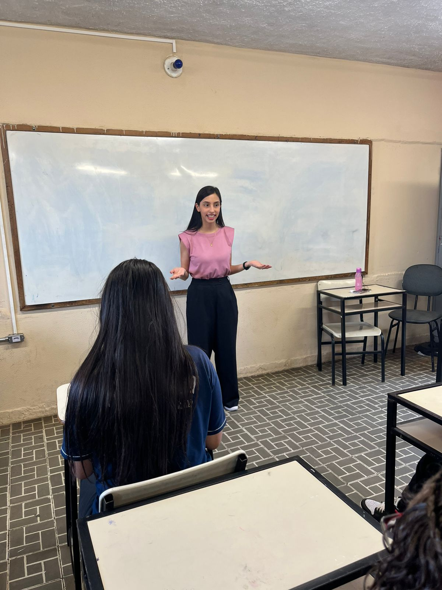
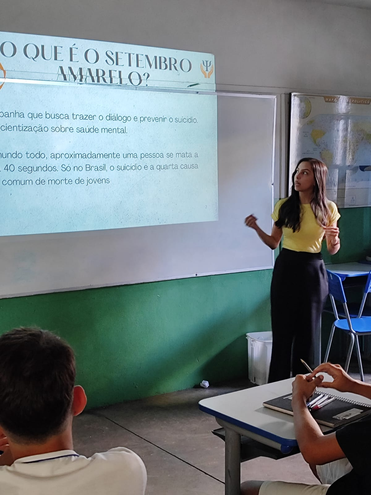
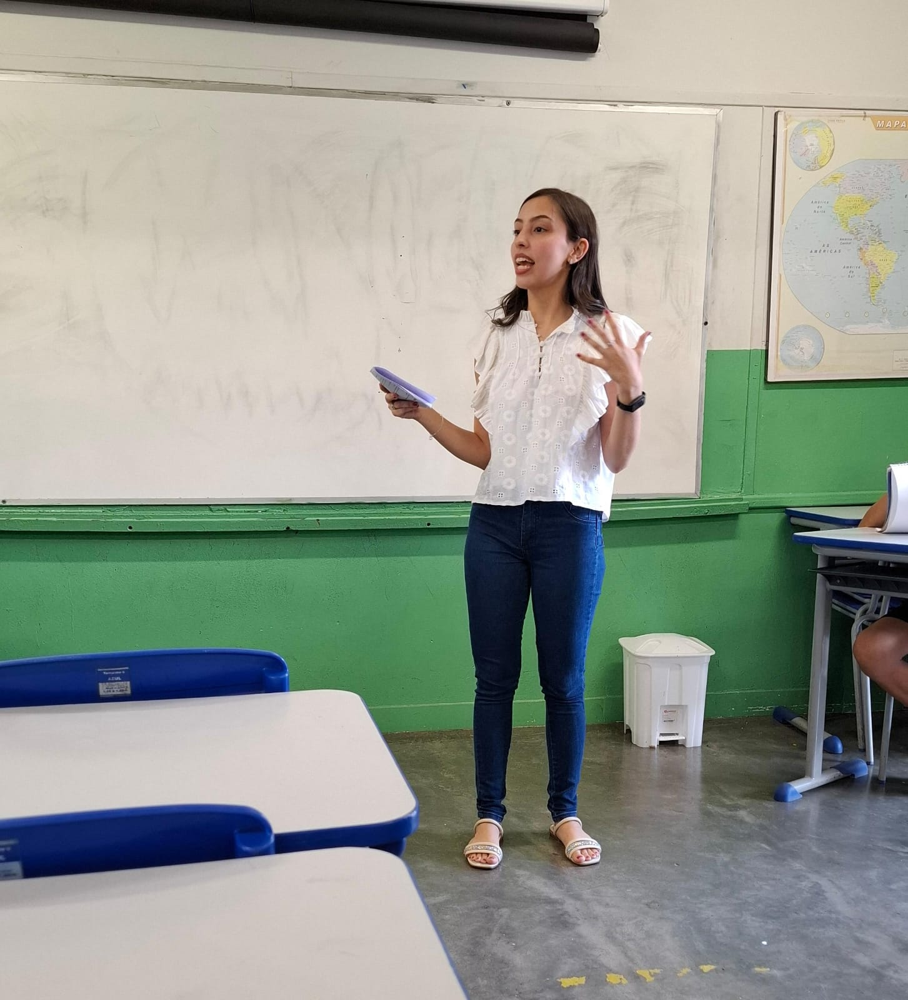
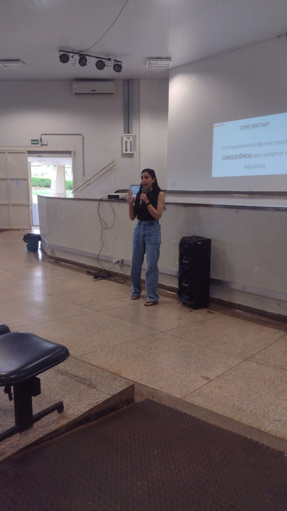
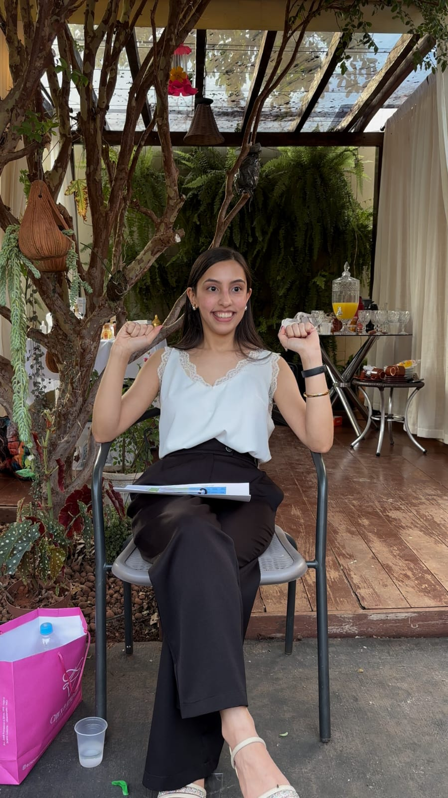

Minhas Ações
Nesta página, apresento as palestras e ações de psicoeducação das quais participei, realizadas tanto de forma independente quanto por meio do projeto "Onde o Cuidado Chega"
As atividades tiveram como foco a promoção da saúde mental, a escuta, o diálogo e a reflexão sobre temas relevantes para diferentes públicos.




